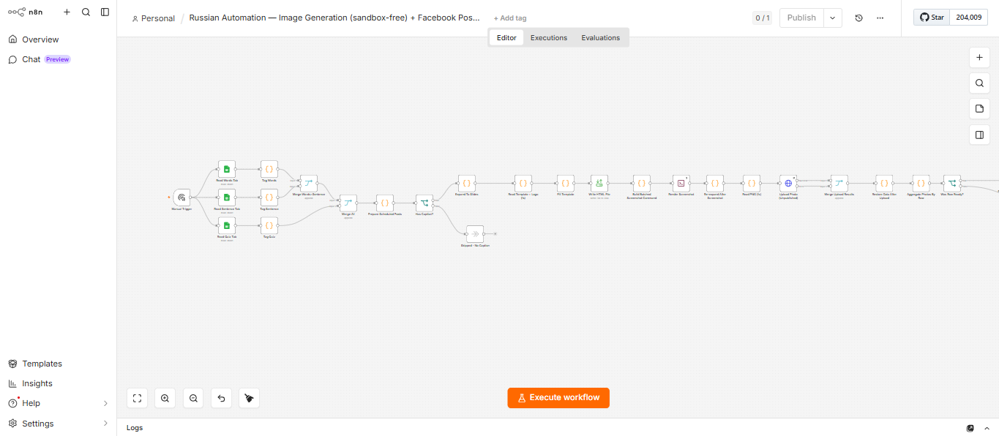
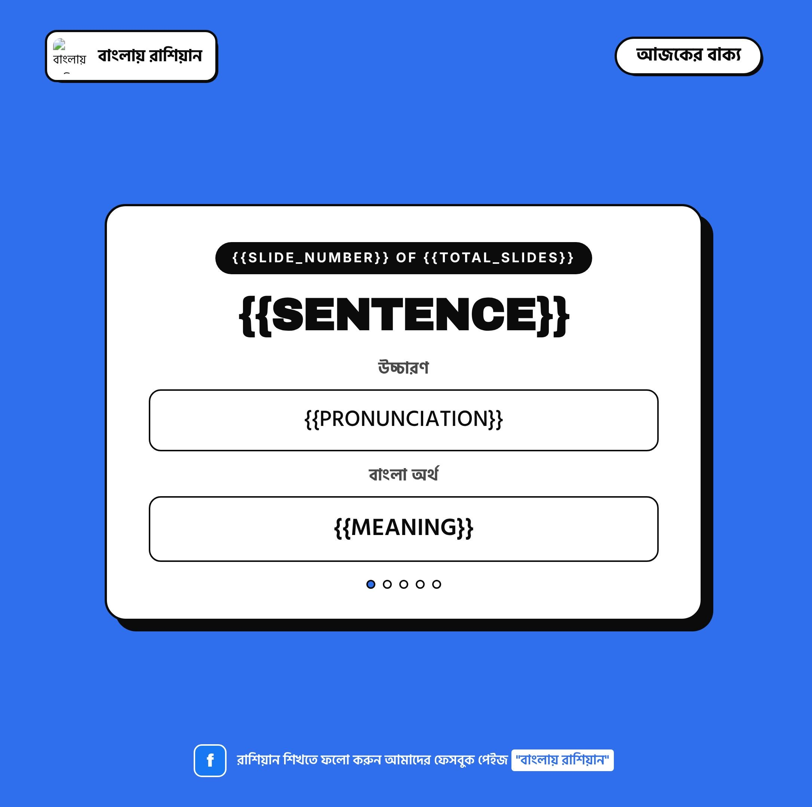
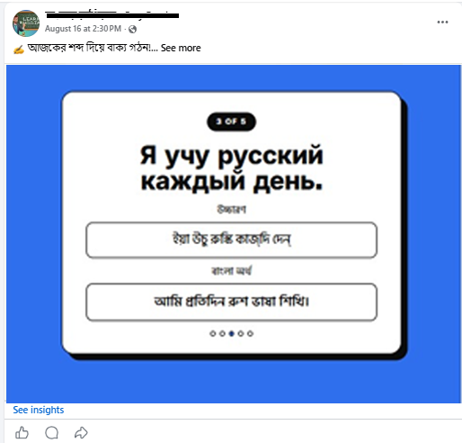
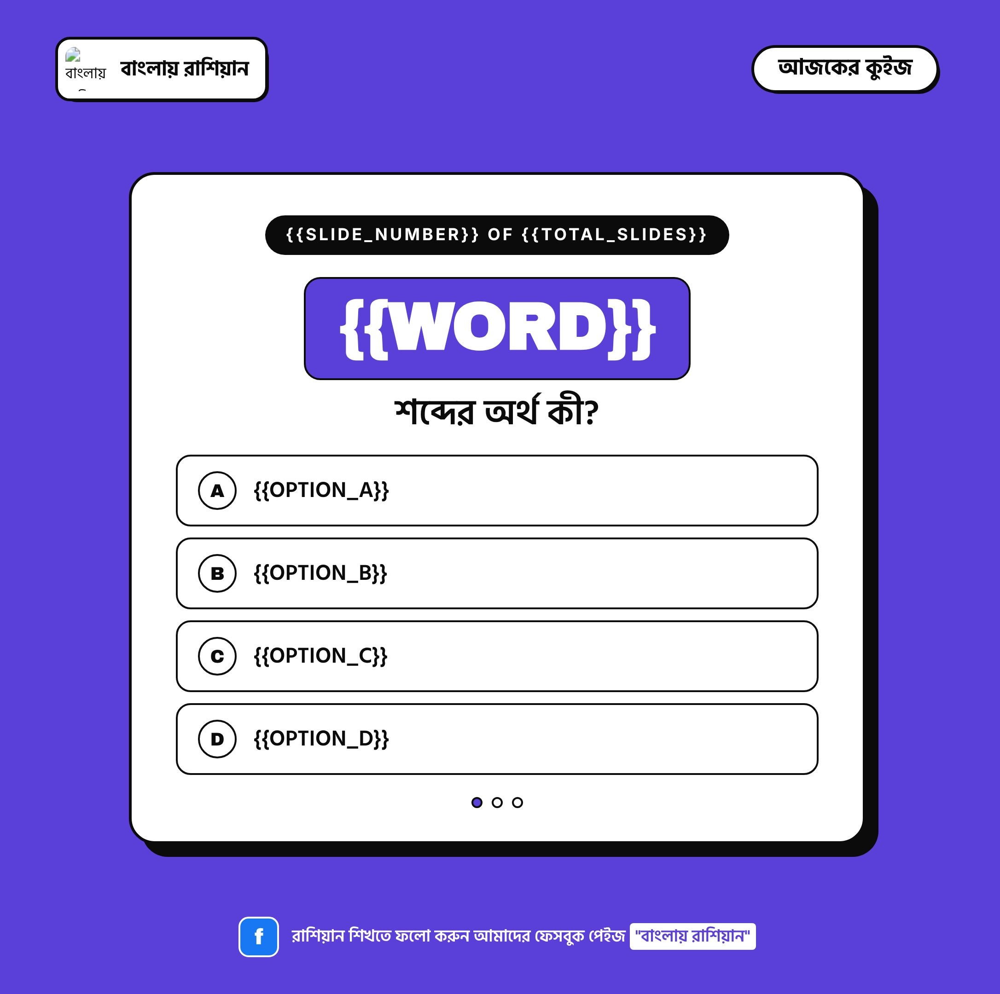
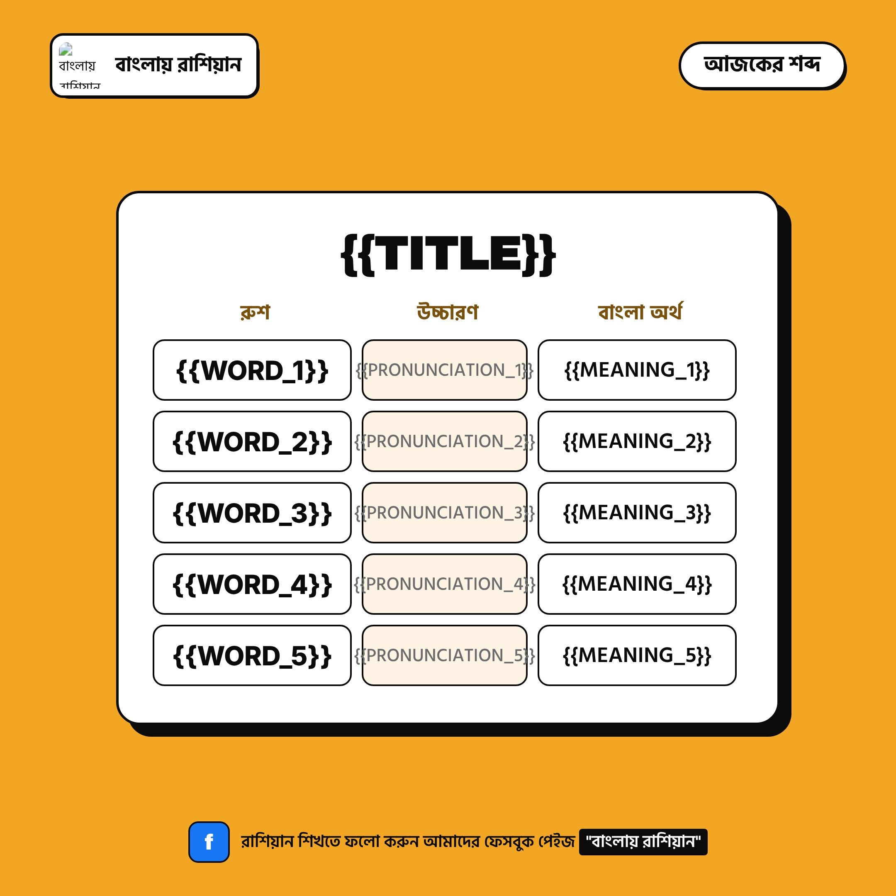

Russian Vocabulary Automation
An unattended pipeline that turns a client's Google Sheets rows into a scheduled, three-times-daily Facebook carousel, no design tool, and no manual posting.
 n8n
n8n
 Claude
Claude
 Google Sheets
Google Sheets
"বাংলায় রাশিয়ান" ("Russian, in Bangla") is a client's Facebook Page teaching Bengali speakers Russian vocabulary through three daily carousel posts. Before this project, the client was producing every one of those posts by hand.
- Morning, a five-word vocabulary poster
- Noon, a single Russian sentence with pronunciation and meaning
- Night, a four-option quiz on a word from earlier in the day
This is the story of how that became one n8n workflow that now runs unattended from nothing but rows in a spreadsheet.
The Problem
- Every post needed the same shape, a title, Russian text, a Bengali translation, laid out on a branded 1080×1080 poster, designed by hand in an image editor
- That did not scale to three posts a day, so timing drifted: a morning post might not go out until the afternoon
- A missed day left no record anywhere except the client's own memory of "did I post that?"
- No design team and no CMS behind it, just a spreadsheet and whatever time was left in the day
- The brief: the whole loop, from a new word list to a published post, had to run without anyone sitting at a screen three times a day
The Approach
Split the problem into three sheet tabs, Words, Sentence, Quiz, each feeding its own HTML/CSS poster template, then built an n8n workflow, with Claude, around them:
- Read the rows due for posting from the sheet
- Fill each template's
{{PLACEHOLDER}}tokens with that row's content - Render every slide to a PNG in a single headless Puppeteer session
- Upload the images to the Facebook Page as unpublished photos through the Graph API1
- Stitch them into one scheduled carousel post

The full workflow in n8n, reading three sheet tabs, filling templates, rendering with Puppeteer and publishing to Facebook.The first template built was the Sentence poster, then it went out as an actual, live post.

The Sentence template, built in HTML and CSS, tokens still unfilled.
The same template, live as a published Facebook post.The hardest part wasn't the Facebook API, it was the small stuff around it:
- Google Sheets returns a date-formatted cell as a numeric day count rather than a string, so half the scheduled rows were silently skipped until an explicit serial-date parser was added
- n8n's Windows file-access allowlist does a literal string match against backslash paths, so a forward slash anywhere in a file path made a read silently fail
- The first version launched a fresh headless Chromium process per image, fine for one slide, but the ninth or tenth in a batch would just never come back
All three were the kind of bug you only find by watching a run fail quietly, rather than assuming the log is telling you the whole story.
The Sentence template above is one of three. The other two, Quiz at night and Vocabulary each morning, round out the rotation.

The Quiz template, one Russian word with four Bengali options.
The Vocabulary template, five words per post.The Outcome
- 3 scheduled posts published a day, entirely unattended, from spreadsheet rows alone
- Zero manual image design or uploading once a row is filled in
- Self-diagnosing status, every row is written back as Posted or Failed with a reason, so a gap is visible immediately
- One task left, the client's only remaining job is writing new words, sentences and quiz questions into the sheet
What I'd Do Differently
- Build the date-serial handling and the Windows path handling in from the first draft, rather than discovering both in production; both were entirely predictable once I understood how Sheets and n8n actually behave
- Design the retry path earlier: right now a failed row needs a manual glance at the Failed Reason column before it's reset to Pending; a self-healing retry for the obviously transient failures, a timed-out upload, say, would close the loop completely
1 All Facebook and n8n credentials live only in a local start script, never inside the version-controlled workflow file.